전파전자통신기사 (2020-06-06 기출문제)
1과목: 디지털전자회로
1. 다음 그림은 정류회로의 입력파형과 출력파형을 나타내었다. 주어진 입출력 특성을 만족시키는 정류회로는? (단, 다이오드의 문턱전압은 0.7[V]이고, 변압기의 권서비는 1:1이라 가정한다.)
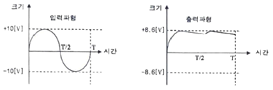
- 반파정류회로
- 유도성 중간탭 전파정류회로
- 2배압 정류회로
- 용량성 필터를 갖는 브리지 전파정류회로
(정답률: 100%)

2. 다음 정류회로에 대한 설명으로 옳은 것은?
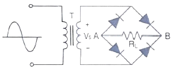
- 저전압 정류할 때 적합하다.
- VS가 양의 전압일 때 RL양단에 전류가 흐르지 않는다.
- RL에 걸리는 전압의 최대치는 T의 2차 전압의 최대치에 가깝다.
- 다이오드에 걸리는 역방향 전압의 최대치는 T의 2차 전압의 최대치에 2배에 가깝다.
(정답률: 74%)
3. 다음 정전압 회로에 대한 설명으로 틀린 것은?
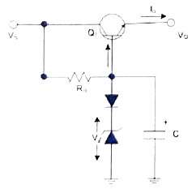
- 다이오드를 통하여 온도변화에 대해 안정하다.
- 캐패시티를 통하여 리플성분을 제거해 준다.
- 출력 전압(VO)은 제너전압(VZ)에 순방향 전압을 더한 값이다.
- 동전위 정전압 회로이다.
(정답률: 54%)
4. 공통 베이스(Common Base) 증폭기 회로에서 컬렉터 전류가 4.9[mA]이고, 이미터 전류가 5[mA]이었을 때 직류전류 증폭률은?
- 0.98
- 1.02
- 1.27
- 1.31
(정답률: 77%)
5. 다음과 같은 궤환 증폭회로(부궤환)의 궤환 증폭도(Af)는?
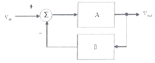
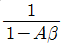
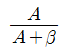
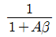
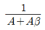
(정답률: 86%)
6. 다음 궤환회로에 대한 설명으로 틀린 것은?
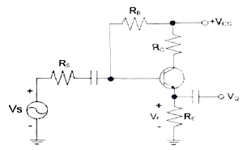
- 궤환으로 입력 임피던스는 감소한다.
- 궤환으로 전체 이득은 감소한다.
- 궤환으로 주파수 일그러짐이 감소한다.
- 궤환으로 출력 임피던스는 감소한다.
(정답률: 39%)
7. 전력증폭회로의 동작등급에서 가장 선형적인 동작이 가능한 것은?
- A급
- AB급
- B급
- C급
(정답률: 70%)
8. 다음 B급 SEPP(Single-Ended Push-Pull) 증폭기에서 트랜지스터 1개당 최대 전력 손실은 약 몇 [W]인가?
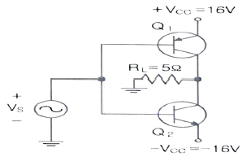
- 1.5[W]
- 2.5[W]
- 3.5[W]
- 4.5[W]
(정답률: 54%)
9. 다음은 윈-브리지 발진회로를 나타내었다. 발진주파수를 구하는 식은 어느 것인가? (여기서, R1=R2=R, C2=C1=C이다.)
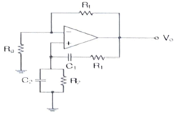
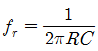
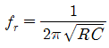
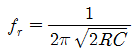
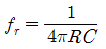
(정답률: 62%)
10. 다음 중 LC발진회로에서 발진주파수의 변동요인과 대책이 틀린 것은?
- 전원전압의 변동 : 직류인 정화 바이어스 회로를 사용
- 부하의 변동 : Q가 낮은 수정편을 사용
- 온도의 변화 : 항온조를 사용
- 습도에 의한 영향 : 회로의 방습 조치
(정답률: 70%)
11. 그림과 같은 수정편의 등가회로에서 LO=25[mH], CO=1.6[pF], RO=5[Ω], C1=4[pF]일 때 직렬 공진 주파수는 약 얼마인가? (단, =3.14)
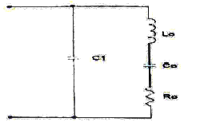
- 766.2[kHz]
- 776.2
- 786.2
- 796.2
(정답률: 42%)
12. 진폭변조(Amplitude Modulation)에서 반송파 전력이 15[kW]일 때, 변조도를 100[%]로 변조하면 피변조파 전력은 얼마인가?
- 12.5[kW]
- 15[kW]
- 20[kW]
- 22.5[kW]
(정답률: 54%)
13. 다음은 FM복조(검파)회로의 일부이다. 이 회로의 설명으로 옳은 것은?
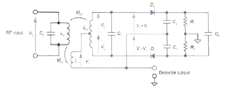
- 주로 FM복조, AM복조, 주파수 합성, 전화기의 톤(Tone) 검출 주파수 추이 그리고 모터 속도 제어 등에 이용한다.
- 입력신호의 진폭에 비례하여 출력전압 신호를 만들어 내는 장치이다.
- 진폭제한기(Limitter)의 기능을 겸하고 있는 주파수 변별기이다.
- 변별기 자체에 진폭제한 작용이 없으므로 앞단에 반드시 진폭제한기를 달아주어야 한다.
(정답률: 67%)
14. 다음 중 주파수 변조에 대한 설명으로 틀린 것은?
- 직접 FM과 간접 FM방식이 있다.
- 입력신호에 따라 반송파의 주파수를 변화시킨다.
- 선형 변조방식이다.
- 반송파로는 cos 함수 또는 sin 함수와 같은 연속함수를 사용한다.
(정답률: 77%)
15. 9,600[bps]의 비트열을 16진 PSK로 변조하여 전송하면 변조속도는?
- 1,200[Baud]
- 2,400[Baud]
- 3,200[Baud]
- 4,600[Baud]
(정답률: 85%)
16. 다음 중 입력 전압이 일정한 값 이상이 되면 출력 펄스가 상승하고, 입력 전압이 일정한 값 이하가 되면 출력 펄스가 하강하는 특성을 이용하여 주파수 변화회로로 사용하는 회로는?
- 슈미트 트리거 회로
- 클리프 회로
- 리미터 회로
- 클램핑 회로
(정답률: 62%)
17. 다음 중 파형 조작 회로에서 클리퍼(Clipper)회로에 대한 설명으로 옳은 것은?
- 입력 과형에서 특정한 기준 레벨의 윗부분 또는 아랫부분을 제거 하는 것
- 입력 과형에 직류분을 가하여 출력 레벨을 일정하게 유지하는 것
- 입력 파형중에 어떤 특정 시간의 과형만 도출하는 것
- 입력의 Step전압을 인가하는 것
(정답률: 75%)
18. 다음 중 논리방정식이 잘못된 것은?
- A+1=A
- A·0=0
- A+A·B=A
- A·(A+B)=A
(정답률: 70%)
19. 다음의 진리표에 해당하는 논리회로도는?
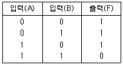
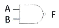
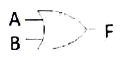
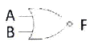
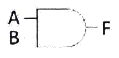
(정답률: 79%)
20. 다음 그림과 같은 회로의 명칭은?
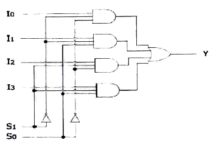
- 병렬가산기
- 멀티플렉서
- 디멀티플렉서
- 디코더
(정답률: 87%)
2과목: 무선통신기기
21. DSB 변조에서 정현파로 변조된 피변조파의 변조도(m)가 0.6이고 반송파의 평균전력(Pε)이 1000[W]일 때 측대파 전력(Ps)으로 알맞은 것은?
- 180[W]
- 360[W]
- 600[W]
- 1000[W]
(정답률: 64%)
22. 다음 중 대역폭이 6[kHz]이고 중간 주파수가 455[kHz]인 슈퍼헤테로다인 수신기가 650[kHz]를 수신하고 있을 때 영상 혼신 주파수는?
- 1560[kHz]
- 1755[kHz]
- 1111[kHz]
- 916[kHz]
(정답률: 67%)
23. 다음 중 송수신기용 발진기의 요구조건으로 적합하지 않은 것은?
- 고조파가 적을 것
- 주파수의 안정도가 높을 것
- 온도, 습도의 변화에 대해서 발진출력이 일정할 것
- 주파수의 미세조정이 어려울 것
(정답률: 86%)
24. FM수신기의 주파수 변별기의 Response Curve에서 특성을 좋아지게 하는 방법으로 옳지 않은 것은?
- 중심주파수 부근의 경사가 급할 것
- 중심주파수에 대칭적일 것
- 중심주파수에서 출력이 최대가 될 것
- 직선부분이 길 것
(정답률: 50%)
25. 다음 중 QPSK 변조방식의 대역폭 효율로 적합한 것은?
- 1[bps/Hz]
- 2[bps/Hz]
- 4[bps/Hz]
- 8[bps/Hz]
(정답률: 50%)
26. 다음 중 16QAM 신호의 설명으로 적합한 것은?
- 에러를 적은 통신을 하기 위해서는 가능한 신호점 상호 거리를 좁힌다.
- 신호의 송신전력을 억제하기 위해서는 원점에 가깝게 한다.
- 좁은 전송대역폭으로 많은 정보를 전달하기 어렵다.
- 반송파의 위상신호만을 변조한다.
(정답률: 43%)
27. 다음 중 “로란 C”에 대한 설명으로 틀린 것은?
- 지표파 이용범위는 120마일 내외이다.
- 송신국은 주국 1개, 종국 2~4개로 구성된다.
- 펄스군 반복주기를 GHI(Group Recurrence Interval)라 한다.
- 공간파는 가능한 한 이용하지 않는 것이 좋다.
(정답률: 9%)
28. 다음 중 저궤도 위성통신시스템에 대한 설명으로 옳지 않은 것은?
- 대표적인 위성으로 Inmarsat가 있다.
- 정지궤도에 비하여 전파지연시간이 적다.
- 중궤도 및 정지궤도에 비하여 발사비용이 저렴하다.
- 위성의 고도는 일반적으로 500~1,000[km] 정도에서 지구상공을 주회하고 있다.
(정답률: 54%)
29. 다음 보기의 다중화 방법을 기술의 발전 순서대로 올바르게 나열한 것은 어느 것인가?
- ⓐ→ⓑ→ⓒ→ⓓ→ⓔ
- ⓐ→ⓒ→ⓓ→ⓑ→ⓔ
- ⓐ→ⓒ→ⓓ→ⓔ→ⓑ
- ⓒ→ⓓ→ⓐ→ⓑ→ⓔ
(정답률: 72%)
30. 다음 중 대역확산 방법의 종류가 아닌 것은?
- 직접확산(DS-SS:Direct-Sequence Spread Spectrum)
- 주파수 호핑 대역확산(FH-SS:Frequency-Hopping Spread Spectrum)
- 시간 호핑 대역확산(THSS: Time-Hopping Spread Spectrum)
- 부호 분할 대역확산(CDSS: Code Division Spread Spectrum)
(정답률: 72%)
31. 다음 중 CDMA 시스템에서 모든 사용자들이 동일한 주파수대역을 사용하고 있기 때문에 순방향 채널 상에서 발생하는 상호 간섭을 피하고 각각의 사용자 채널을 분리·구분하기 위해 사용되는 직교성을 갖는 확산 코드 세트를 무엇이라 하는가?
- PN Code
- Walsh Code
- Glod Code
- Orthogonal Code
(정답률: 70%)
32. 다음 [보기]에서 디지털선택호출장치의 기술기준으로 적절한 것을 모두 고른 것은?
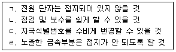
- ㄱ
- ㄱ, ㄴ
- ㄱ, ㄴ, ㄷ
- ㄱ, ㄴ, ㄷ, ㄹ
(정답률: 39%)
33. 정류기의 출력단자에 단자전압과 동일한 축전지를 접속하고, 출력단자와 병렬로 부하를 연결하는 방법으로 평상시에는 정류기에서 부하전류를 공급하고, 정전시에는 축전지에서 부하전류를 공급하는 방식을 무엇이라 하는가?
- 과충전
- 속충전
- 균등충전
- 부동충전
(정답률: 59%)
34. 다음 설명은 무정전 전원장치(Uninterruptible Power Supply; UPS)의 어떤 구동 방식에 해당하는 것인가?
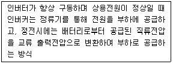
- CVCF(Constant Voltage Constant Frequency)
- ON-LINE
- OFF-LINE
- LINE INTERACTIVE
(정답률: 75%)
35. 다음 전력 장치에 대한 설명으로 틀린 것은? (단, 변압기 1차 측의 인가 전압의 실효치는 Vrms이다.
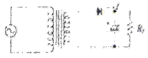
- 반파 정류회로이다.
- 다이오드의 내압은 Vrms보다 커야 된다.
- 콘덴서의 인가 허용전압은 1.4142Vrms보다 커야 된다.
- 교류를 직류로 변환하는 회로이다.
(정답률: 47%)
36. 송신기의 의사(Pseudo) 부하로서 20[Ω]의 무유도 저항을 접속하고, 이 부하에 흐르는 전류를 고주파 전류계로 측정하였더니 2[A]일 경우에 송신기의 출력은?
- 40[W]
- 60[W]
- 80[W]
- 100[W]
(정답률: 39%)
37. 입력 측의 신호 대 잡음비가 50, 출력 측의 신호 대 잡음비가 1이다. 이 증폭기의 잡음지수 NF는 약 얼마인가?
- 10[dB]
- 12[dB]
- 15[dB]
- 17[dB]
(정답률: 85%)
38. 다음 중 급전선 측정 항목으로 올바른 것은?
- 주파수 안정도 측정
- 주파수 허용 편차 측정
- 전파의 지향성 측정
- 전압 정재파비 측정
(정답률: 58%)
39. 다음 회로에서 출력전압의 변동분을 분담하여 보상한 소자는?
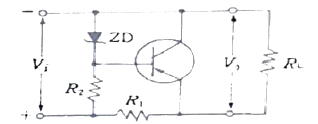
- R1
- R2
- RL
- ZD
(정답률: 34%)
40. 다음 그림의 정전전압회로에서 V가 25~28[V]의 범위에서 변동한다. Zener diode 전류의 변화는? (단, RL=1[kΩ], VL=20[V]이다.)
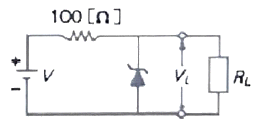
- 30~50[mA]
- 30~60[mA]
- 10~50[mA]
- 10~60[mA]
(정답률: 34%)
3과목: 안테나공학
41. 평면파(Plane Wave)에 대한 설명으로 틀린 것은?
- 균일 평면파는 TEM(Transverse Electromagnetic Wave) 모드에 해당된다.
- TEM모드는 진행방향에 직각으로 전계와 자계 성분이 모두 존재하는 모드이다.
- TEM모드는 진행방향에 자계성분만이 존재하는 모드이다.
- TEM모드는 진행방향에 전계와 자계 성분이 존재하지 않는 모드이다.
(정답률: 70%)
42. 다음 중 안테나의 편파에 대한 설명으로 잘못된 것은?
- 안테나의 편파는 송신 안테나에서 주어진 방향으로 복사되어 나가는 파의 편파이다.
- 전파의 전기력선의 방향에 따라 수평 편파와 수직 편파로 분류한다.
- 전기력선의 진동방향과 크기 변화에 따라 직선 편파, 원형 편파, 타원 편파로 분류한다.
- 원형 편파의 축비는 0이다.
(정답률: 79%)
43. 자유공간에서의 파동 임피던스는 약 얼마인가?
- 120[Ω]
- 377[Ω]
- 50[Ω]
- 137[Ω]
(정답률: 85%)
44. 구좌표계(ø,θ, )로 표시되는 전계 E가 성분, 자계 H가
)로 표시되는 전계 E가 성분, 자계 H가
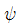
성분을 가질 때 포인팅 전력 P의 진행 방향은 어느 방향인가?- θ방향
 방향
방향- ø방향
- θ와
 방향
방향
(정답률: 60%)
45. 특성 임피던스 300[Ω]인 전송선로와 부하 임피던스 500[Ω]인 전송선로를 직접 접속하면 전압 반사계수는 얼마인가?
- 0.60
- 0.25
- 1.67
- 4.00
(정답률: 70%)
46. 특성 임피던스가 50[Ω]이고 부하 임피던스가 100[Ω]인 전송선로에서 정재파비는 얼마인가?
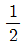
- 2
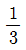
- 3
(정답률: 60%)
47. 다음 중 동조 급전선에 대한 설명으로 틀린 것은?
- 임피던스 정합장치가 필요하다.
- 급전선상에 정재파가 존재하다.
- 급전선의 길이가 짧을 때 사용한다.
- 전송 효율이 비동조 급전선보다 나쁘다.
(정답률: 28%)
48. 도파관의 여진 방법 중 주로 자계에 의해 여진하는 방법은?
- 정전적 결합에 의한 여진
- 전자적 결합에 의한 여진
- 작은 루프 안테나에 의한 여진
- 무반사 종단회로에 의한 여진
(정답률: 42%)
49. 길이 0.5[m]의 미소 다이폴 안테나에 60[MHz], 전류를 10[A] 흘렸을 때 복사전력은 약 얼마인가?
- 290[W]
- 350[W]
- 790[W]
- 870[W]
(정답률: 54%)
50. 주파수 7.5[MHz]용의 λ/4수직접지 안테나가 있다. 기저부의 전류가 5[A]일 때 지상 5[m]인 점에서의 전류는 약 얼마인가?
- 2.5[A]
- 3.5[A]
- 4.5[A]
- 5.5[A]
(정답률: 65%)
51. 반파장 다이폴 안테나와 피측정 안테나에서 동일 방사 전력으로 방사시킨 전파의 최대 방사 방향에서의 전계강도가 동일 거리에서 각각 100[μV/m]와 200[μV/m]이었다면 피측정 안테나의 상대이득은 약 몇 [dB]인가?
- 3[dB]
- 6[dB]
- 12[dB]
- 18[dB]
(정답률: 42%)
52. 다음 중 안테나의 대역폭을 개선하는 방법이 아닌 것은?
- 안테나의 특정 임피던스를 작게 한다.
- 안테나의 직경이 굵은 것을 사용한다.
- 안테나의 Q를 작게 한다.
- 안테나 이득을 높게 한다.
(정답률: 43%)
53. 실효 인덕턴스가 20[mH]이고 실효 정전용량이 5[㎌]인 반파장 안테나의 고유 주파수는 대략 얼마인가?
- 0.5[kHz]
- 1.0[kHz]
- 1.5[kHz]
- 2.0[kHz]
(정답률: 8%)
54. 중파 방송에서 많이 사용하는 정관형(Top Ring)안테나의 특징은?
- 전리층반사파와 지표파가 상호간섭하는 영역을 줄여준다.
- 전리층산란파와 지표파가 상호간섭하는 영역을 줄여준다.
- 대류권반사파와 대지반사파가 상호갑섭하는 영역을 줄여준다.
- 대류권산란파와 대지반사파가 상호갑섭하는 영역을 줄여준다.
(정답률: 24%)
55. 대지반사파에서 자계가 입사평면에 평행하게 경계면에 입사하는 경우, 이는 무슨 편파인가?
- 수직편파
- 평행편파
- 원편파
- 타원편파
(정답률: 50%)
56. 제1 프레넬영역(Fresnel Zone)의 반경에 대한 설명 중 옳은 것은?
- 송신점과 수신점 사이의 거리의 제곱근에 반비례한다.
- 파장에 비례한다.
- 송신점과 장애물 사이의 거리에 비례한다.
- 수신점과 장애물 사이의 거리에 비례한다.
(정답률: 65%)
57. 라디오 덕트(Radio duct)는 온도의 역전층 및 높이에 의한 굴절률 변동에 의해 발생한다. 굴절율의 역전층에 대한 관계식은? (단, M: 수정굴절률, h: 지상높이이다.)
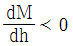
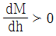
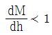
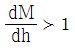
(정답률: 50%)
58. 다음 중 대류권 산란파의 특징으로 옳은 것은?
- 지향특성이 강한 안테나를 사용하여야 한다.
- 지리적 제약을 많이 받는다.
- 다이버시티 방식에 의하여 페이딩을 방지할 수 있다.
- 저출력 송신기에서 주로 사용한다.
(정답률: 62%)
59. 다음 중 발생주기가 불규칙하여 고정통신 수단에서 사용하기가 부적합한 전리층은?
- D층
- E층
- Es층
- F층
(정답률: 54%)
60. 전리층 내에서 주파수가 다른 2개의 전자파 사이의 간섭에 따른 현상은?
- 델린저 현상
- 자기람 현상
- 라디오덕트 현상
- 룩셈부르크 현상
(정답률: 58%)
4과목: 통신영어 및 교통지리
61. Choose the most suitable words for the blank of the following sentence.
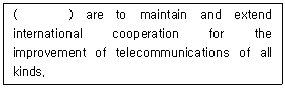
- The structure of the Union
- The rights of Union
- The purposes of the Union
- The ability of the Union
(정답률: 67%)
62. Fill in the blank with the suitable one.
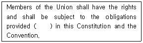
- of
- at
- for
- without
(정답률: 60%)
63. Which language shall prevail in case of any discrepancy or dispute among various language versions of the Constitution?
- English
- French
- Spanish
- Arabic
(정답률: 62%)
64. Choose the correct term that has the meaning of the following sentence.
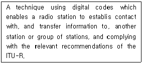
- DSC
- GMDSS
- NBDP
- EGC
(정답률: 36%)
65. 다음 문장이 설명하는 단어 또는 어휘를 고르시오.
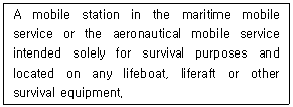
- Coast station
- Survival craft station
- Ship station
- Land station
(정답률: 29%)
66. Choose the correct Korean traslation of the underlined parts.
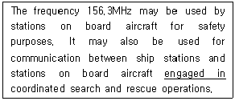
- 취직하는
- 종사하는
- 비어있는
- 예정된
(정답률: 67%)
67. 다음 중 본문 내용과 관련이 없는 것은?
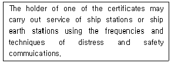
- First-class radio electronic certificate.
- Second-class radio electronic certificate.
- General operator’s certificate.
- Radio telephone operator’s certificate.
(정답률: 39%)
68. Choose the different meaning of the underlined parts of following sentence.
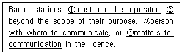
- 운용되어서는 아니 된다.
- 그들 무선국의 목적 외에
- 통신의 상대방
- 통신 문제
(정답률: 24%)
69. Choose the incorrect accent in the following phonetic alphabet.
- C : CHAR LEE
- I : IN DEE AH
- J : JEW LEE ETT
- P : PAH PAH
(정답률: 65%)
70. Choose the wrong meaning of each underlined parts of the following sentence.
- “사라지다”의 뜻이다.
- “향해하다”의 뜻이다.
- “부근이 조용해지면”의 뜻이다.
- “추후 본선의 정확한 도착시간”의 뜻이다.
(정답률: 63%)
71. “Leeway”의 의미를 옳게 나타낸 것은?
- 앞길
- 뒷길
- 풍압차
- 풍향차
(정답률: 67%)
72. What do we call ‘Shaft tunnel’ in Korean?
- 통로
- 측로
- 선로
- 죽로
(정답률: 62%)
73. What does mean the following glossary in the IMO English?
- 원형선박
- 원형교차선박
- 원형교차점
- 원형중접점
(정답률: 70%)
74. Fill in the blank with the correct word.
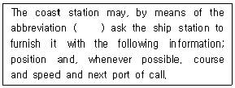
- QRK
- TR
- PBL
- CQ
(정답률: 43%)
75. 해사안전정보 유포를 위한 NAVAREA 해역에서 우리나라는 몇 구역에 속하는가?
- 제6구역
- 제9구역
- 제11구역
- 제16구역
(정답률: 84%)
76. 다음 중 Bosporus Straits는 어느 것인가?
- 홍해와 아라비아해를 연결
- 흑해와 마르마라해를 연결
- 보르네오섬과 세레베스섬 사이를 연결
- 세레베스섬과 몰러카제도 사이를 연결
(정답률: 62%)
77. AFRICA 동남해안과 MADAGASCAR섬 사이의 해협은?
- KIEL CANAL
- MALACCA STRAIT
- MOZAMBIQUE CHANNEL
- STRAIT OF OTRANTO
(정답률: 54%)
78. 다음 중 계절풍(Monsoon)에 대한 설명 중 맞는 것은?
- 하계의 계절풍은 육지에서 바다로 분다.
- 낮에는 바다에서 육지로 밤에는 육지에서 바다로 분다.
- 계절풍이 가장 심한 지역은 호주지방이다.
- 대륙과 대양과의 기온 차로 생기는 바람이다.
(정답률: 50%)
79. 다음은 열대성 저기압과 주 발생 지역을 짝지은 것으로 틀린 것은?
- Cyclone - Gulf of Bengal
- Willy Willy – Antarctic Sea
- Hurricane – Caribbean Sea
- Typhoon – Southwest Zone of North Pacific Ocean
(정답률: 57%)
80. 따뜻한 기단이 찬 기단 위쪽으로 이동하여 형성되는 전선은?
- 한냉전선
- 온난전선
- 정체전선
- 폐색전선
(정답률: 65%)
5과목: 전파관계법규
81. “허가나 신고로 개설하는 무선국에서 이용할 특정한 주파수를 지정하는 것”으로 정의되는 것은?
- 주파수지정
- 주파수분배
- 주파수할당
- 주파수회수
(정답률: 75%)
82. 다음 중 과학기술정보통신부가 심사에 의하여 주파수 할당을 할 경우, 심사 사항에 속하지 않는 것은?
- 전파자원 이용의 효율성
- 전파자원 이용의 공평성
- 신청자의 기술적 능력
- 신청자의 제정적 능력
(정답률: 24%)
83. 다음 중 실험국의 개설조건에 합당하지 않은 것은?
- 신청인이 그 실험을 수행할 능력을 가지고 있을 것
- 실험의 목적과 내용이 과학기술의 진보 발전 또는 과학지식의 보급에 공헌할 합리적 가능성이 있을 것
- 실험의 목적과 내용이 공공복리를 해하지 아니할 것
- 신청인이 해당 무선설비를 제작할 수 있을 것
(정답률: 85%)
84. 다음 중 정기검사 유효기간이 1년인 무선국은?
- 총 톤수 100톤의 의무선박국
- 총 톤수 30톤 어선의 의무선박국
- 평수구역 안에서만 운항하는 선박의 의무선박국으로 여객선 및 어선이 아닌 선박
- 헬리콥터 및 경량항공기의 의무항공기국
(정답률: 36%)
85. 무선국의 운용을 휴지할 경우 신고하여야 할 운용휴지기간은?
- 1개월 이상 1년 이내
- 2개월 이상 2년 이내
- 3개월 이상 3년 이내
- 1개월 이상 2년 이내
(정답률: 67%)
86. 다음 중 선박국에서 그 선박이 소재하는 통신권의 해안국에 그 뜻을 통지하지 않아도 되는 것은?
- 통신권에 들어왔을 때
- 입항으로 폐국하려고 할 때
- 출항으로 개국하려고 할 때
- 정기선의 선박국으로서 그 선박이 정시에 입출항하는 경우
(정답률: 60%)
87. 다음 중 안전통보의 송신에 사용하는 주파수는?
- 긴급통신 주파수
- 조난통신 주파수
- 통상사용 주파수
- 항행경보신호 주파수
(정답률: 36%)
88. 비상위치지시용 무선표지설비의 공중선 전력의 허용편차는?
- 상한 5[%], 하한 10[%]
- 상한 10[%], 하한 20[%]
- 상한 5[%], 하한 5[%]
- 상한 50[%], 하한 20[%]
(정답률: 62%)
89. 다음 괄호 안에 들어갈 내용으로 알맞은 것은?
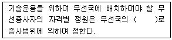
- 송수신기대수별
- 송신기대수별
- 수신기대수별
- 무선국수별
(정답률: 75%)
90. 다음 중 무선종사자의 자격·종목 및 종사범위에서 무선설비산업기사의 종사범위가 아닌 것은?
- 안테나공급전력 3[kw] 이하의 무선전선
- 안테나공급전력 3[kw] 이하의 팩시밀리
- 안테나공급전력 2[kw] 이하의 무선전화
- 레이다
(정답률: 34%)
91. 선박 또는 항공기의 조난이 없음에도 불구하고 무선설비로 조난통신을 한 자는 어떠한 형벌이 주어지는가? (단, 무선종사자는 제외한다.)
- 2년 이하의 징역
- 3년 이하의 징역
- 2천만원 이하의 벌금 또는 3년 이하의 징역
- 5년 이하의 징역
(정답률: 43%)
92. 다음 중 전파통신규칙 및 전파통신 회의에서 취해진 결정에 따라 기술적 기준을 포함하는 의사 규칙을 승인하는 기관은?
- 세계전파통신회의
- 전파통신총회
- 전파관리위원회
- 전파통신국
(정답률: 50%)
93. 다음 중 국제전기통신연합의 목적으로 적합하지 않는 것은?
- 전기통신업무의 효율을 증진하고 유용성 증대
- 전기통신부분에 있어서 개발도상국에 대한 기술지원 장려 및 제공
- 모든 종류의 전기콩신의 개선과 합리적인 이용을 위한 회원국 간의 국제적인 협력 유지 및 증진
- 세계평화와 안전의 유지 및 국민복지의 증진을 위한 국제 협력의 촉진
(정답률: 50%)
94. 다음 중 국제전기통신연합(ITU) 현장의 ‘전파통신에 관한 특별규정’에 포함되지 않는 사항은?
- 유해한 혼신
- 전기통신의 비밀
- 국방기관의 설비
- 무선주파수 스펙트럼과 정지위성궤도의 사용
(정답률: 59%)
95. 다음 중 국제전기통신연합(ITU)의 공용어 및 업무용어가 아닌 것은?
- 중국어
- 아랍어
- 일본어
- 러시아어
(정답률: 72%)
96. 해상이동업무 식별정보 중 O1M2I3D4X5X6X7X8X9이 가르키는 것은?
- 선박국 식별정보
- 선박국 집단호출 식별정보
- 해안국 식별정보
- 해안국 집단호출 식별정보
(정답률: 58%)
97. 다음 중 ‘비밀 또는 국·공유재산의 보호를 위하여 울타리 또는 경호원에 의하여 일반인의 출입에 대한 감시가 필요한 지역’은 무엇인가?
- 제한구역
- 통제구역
- 통제지역
- 제한지역
(정답률: 50%)
98. 다음 중 비밀누설의 주요 요인이 아닌 것은?
- 통신제원을 불규칙하게 변경하여 사용하는 경우
- 과다한 통신소통의 경우
- 비밀내용을 평문으로 송신하는 경우
- 보고체제를 다원화하는 경우
(정답률: 31%)
99. 다음 중 전파법에 따라 준수하여야 할 통신보안 사항에 포함되지 않는 것은?
- 무선종사자의 통신보안교육 이수에 관한 사항
- 통신보안책임자의 지정에 관한 사항
- 전기통신 역무를 제공받기 위한 무선국 개설에 관한 사항
- 무선국 허가시 통신보안 조치에 관한 사항
(정답률: 54%)
100. 다음 괄호 안에 들어갈 내용으로 가장 적합한 것은?
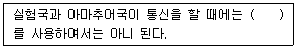
- 약호
- 암호
- 암어
- 음어
(정답률: 58%)